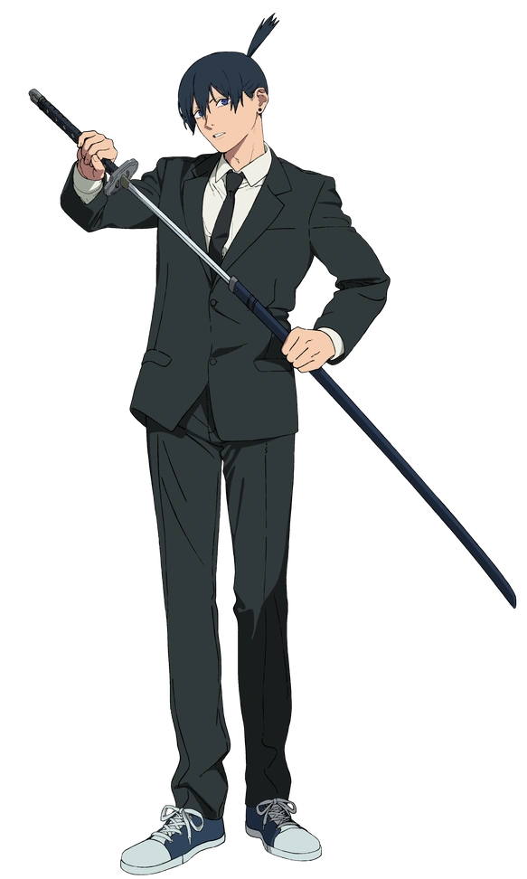
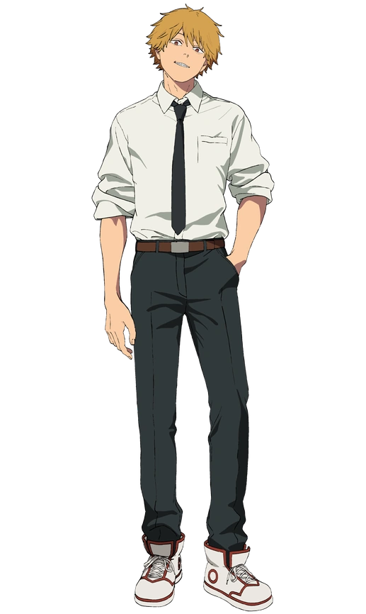

Aki Hayakawa
A disciplined devil hunter working for Public Safety who wields the Fox Devil's power.
© Tatsuki Fujimoto, Shueisha, Shonen Jump, 2018
Denji
The main protagonist who fused with his devil pet Pochita to become Chainsaw Man.
© Tatsuki Fujimoto, Shueisha, Shonen Jump, 2018
Power

A chaotic Blood Fiend who works alongside Denji as a Public Safety Devil Hunter.
© Tatsuki Fujimoto, Shueisha, Shonen Jump, 2018